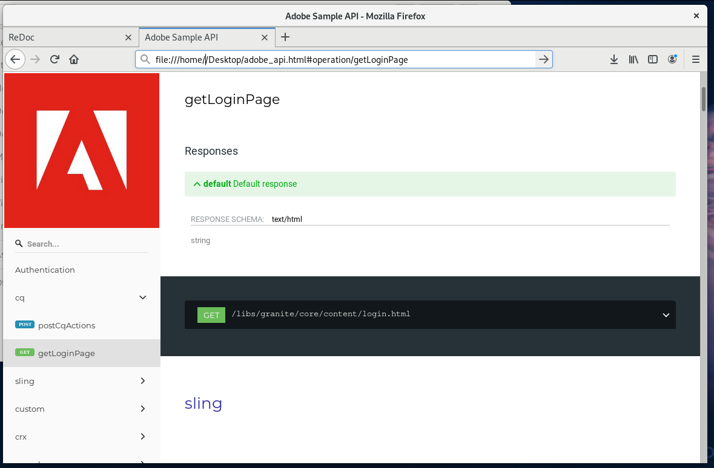

Using ReDoc for creating HTML OpenAPI documentation¶
ReDoc is used for formatting and rendering hosted OpenAPI files as HTML output. Users have the option to customize or add content to the HTML output as needed. ReDoc can be deployed on GitHub, as a React component, or via Docker and supports well-formed and Swagger-compliant .json and .yaml files.
This article uses the following local environment and dependencies:
Fedora 29 Workstation
node.js 12.3.1
npm 6.9.0
ReDoc 2.x
Setting up ReDoc¶
To set up ReDoc using npm:
Install dependencies as needed.
npm i react react-dom mobx@^4.2.0 styled-components
Install the
redocpackage.
npm install redoc --save
Creating a formatted page from an OpenAPI URL¶
Create an HTML page with the necessary formatting to allow for an adaptive design.
This example uses the following markup in the <head> tags.
<meta charset="utf-8"/>
<meta name="viewport" content="width=device-width, initial-scale=1">
<link href="https://fonts.googleapis.com/css?family=Montserrat:300,400,700|Roboto:300,400,700" rel="stylesheet">
<style>
body {
margin: 0;
padding: 0;
}
</style>
Add the source URL for the OpenAPI specification using the
<redoc>tag in the body of the HTML file.
<redoc spec-url='path of OpenAPI specification'></redoc>
Add the ReDoc script for rendering the page.
<script src="https://cdn.jsdelivr.net/npm/redoc@next/bundles/redoc.standalone.js"> </script>
Open the web page to check the layout.